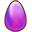
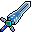
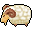
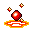
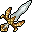

Economia e gold
Sozinho não há mercado entre jogadores: a Store por gold e o gold dos monstros fazem esse papel.
| Item da Store | Preço em gold |
|---|---|
| Fruta / amplificador de EXP | 75–200 mil |
 Ovo de fada | 100–475 mil (comum 150 mil) |
 Visual (arma, roupa, chapéu, asa) | 350–850 mil (comum 800 mil) |
 Montaria | 60 mil (nível 1) · 600 mil (nível 2) · nível 3 só de boss |
 Gemas (aba Gemas) | Já no nível escolhido (1 a 9); cada nível custa 1,65× o anterior. Nível 1: Broken 5 mil · Cracked 10 mil · Chipped 16,7 mil · Gem 26,7 mil · Great Gem 50 mil · Refining Gem 100 mil |
 Equipamento da classe | ~6 × nível2,4 por peça: nível 20 ≈ 8.000 · 40 ≈ 42.000 · 55 ≈ 90.200 · 70 ≈ 160.800 · 75 ≈ 189.800 |
A Store não usa cash: o saldo mostrado é o seu gold (1 Crystal antigo = 25 mil). Itens da Store também caem de monstros e o NPC paga 30% do preço deles.
- Ronda de bosses (80× o gold de um monstro do nível): Death Knight ~100 mil, Black Dragon ~275 mil. Prêmio cheio uma vez a cada 30 min por boss.
- Mini-bosses (15×): 6–50 mil cada; alguns renascem em 5 min.
- Dungeons com elite (2× e drop da loja em dobro): Forsaken City, Demonic World, Pirate Hideout.
- Caçar: ~380 por monstro no 20, ~1.430 no 50, ~2.880 no 80.
- Missões da história (pagam o gold de ~25 monstros do nível delas) e vender drops no NPC (drop 3x).
- Itens da Store que caírem e você não quiser: venda (um visual de 800 mil rende ~240 mil).
No começo o dinheiro é justo; do 50 em diante sobra para visuais, montarias e gemas.
Abra a sua faixa de nível.
Nível 1–9 · monstro comum 24–128 de gold
Melhor caminho: Faça todas as missões da Senna e das cidades e venda tudo que cair no mercador. Não gaste em equipamento: o do começo vem das missões e da aba da sua classe por 1–3 mil.
Nível 10–19 · monstro comum 146–351 de gold
Melhor caminho: Continue nas missões. Venda os drops (drop 3x enche a mochila rápido). Guarde gold para os kits de 20 e 25.
Nível 20–29 · monstro comum 378–645 de gold
Melhor caminho: Melhor dinheiro da fase: ronda de mini-bosses em Ascaron e Shaitan. Bandit Leader - Adder, Sand Bandit Leader - Garet e Captain Fickle renascem em 5 min; dá para ir de um ao outro sem parar.
| Tipo | Alvo | Onde | Gold | Renasce |
|---|---|---|---|---|
| Mini-boss | Sand Bandit Leader - Garet (28) | Shaitan / Magical Ocean (1171, 3026) | 9.190 | 5 min |
| Mini-boss | Bandit Leader - Adder (25) | Ascaron (1052, 3037) | 7.800 | 5 min |
| Mini-boss | Violent Air Porky (23) | Ascaron (1414, 2896) | 6.918 | 30 min |
| Mini-boss | Smuggler Leader (20) | Ascaron (1624, 3017) | 5.667 | 30 min |
Nível 30–39 · monstro comum 677–994 de gold
Melhor caminho: Forsaken City (a cada 2 h): os monstros de lá são elite (gold em dobro) e os capitães são mini-bosses. Fora dela, o Atrocious Yeti King renasce em 5 min.
| Tipo | Alvo | Onde | Gold | Renasce |
|---|---|---|---|---|
| Mini-boss | Sorrow Captain (38) | Forsaken City (153, 136) | 14.355 | 30 min |
| Mini-boss | Sorrow Archer Captain (38) | Forsaken City (176, 139) | 14.355 | 30 min |
| Mini-boss | Atrocious Yeti King (35) | Icicle / Deep Blue (875, 924) | 12.724 | 5 min |
| Mini-boss | Grassland Wolf Champion (33) | Ascaron (1143, 2705) | 11.674 | 30 min |
| Mini-boss | Captain Fickle (30) | Shaitan / Magical Ocean (1506, 3436) | 10.159 | 5 min |
| Mini-boss | Berserk Mad Boar (30) | Ascaron (865, 2971) | 10.159 | 30 min |
| Elite | Sorrow Archer, Sorrow Warrior, Wailing Archer, Wailing Warrior | Forsaken City | 1.421–1.626 cada (354 no mapa) | 30 min |
Nível 40–49 · monstro comum 1.032–1.392 de gold
Melhor caminho: Primeiros bosses grandes: Aries Guardian (renasce em 30 min, no Magical Ocean (2566, 2454)) e Death Knight no fim da Forsaken City 3. Entre eles, Jack - Black Sail e Malicious Azure Siren.
| Tipo | Alvo | Onde | Gold | Renasce |
|---|---|---|---|---|
| Boss | Death Knight (45) | Forsaken City 3 (30, 33) | 98.198 | 2 h |
| Boss | Aries Guardian (45) | Shaitan / Magical Ocean (2566, 2454) | 98.198 | 30 min |
| Mini-boss | Master Swamp Bog (45) | Dark Swamp (155, 283) | 18.412 | 3 h |
| Mini-boss | Cerebus (45) | Pirate Hideout (173, 963) | 18.412 | 24 h |
| Mini-boss | Behemoth (40) | Eastern Goaf (80, 78) | 15.479 | 1 h |
| Mini-boss | Jack - Black Sail (40) | Shaitan / Magical Ocean (1641, 3748) | 15.479 | 2 h |
| Mini-boss | Wailing Captain (40) | Forsaken City (153, 161) | 15.479 | 30 min |
| Mini-boss | Wailing Archer Captain (40) | Forsaken City (177, 162) | 15.479 | 30 min |
| Mini-boss | Malicious Azure Siren (40) | Ascaron (3050, 400) | 15.479 | 30 min |
| Elite | Crazy Mummy | Forsaken City 3 | 2.218 cada (120 no mapa) | 2 min |
Nível 50–59 · monstro comum 1.434–1.833 de gold
Melhor caminho: Demonic World é a fábrica de gold: centenas de Snow Dolls elite renascendo em 2 min, mais o boss Wandering Soul. Dark Swamp tem o Huge Mud Monster.
| Tipo | Alvo | Onde | Gold | Renasce |
|---|---|---|---|---|
| Boss | Wandering Soul (55) | Demonic World (266, 245) | 132.125 | 2 h |
| Boss | Huge Mud Monster (50) | Dark Swamp (63, 1010) | 114.737 | 2 h |
| Mini-boss | Swamp Champion (55) | Dark Swamp (489, 585) | 24.773 | 3 h |
| Mini-boss | Jungle Guardian (51) | Dark Swamp (491, 577) | 22.153 | 2 min |
| Mini-boss | Master Swamp Watcher (50) | Dark Swamp (365, 1303) | 21.513 | 3 h |
| Elite | Imaginary Snow Doll, Snow Doll Spirit | Demonic World | 2.868–3.303 cada (796 no mapa) | 2 min |
| Elite | Swamp Man, Swamp Warden | Dark Swamp | 2.868–3.303 cada (641 no mapa) | 3 h |
Nível 60–69 · monstro comum 1.879–2.313 de gold
Melhor caminho: Demonic World 2 (elites + Snowman Warlord) e os Baby Icy Dragon do Eastern Goaf (elite, renascem em 1 min).
| Tipo | Alvo | Onde | Gold | Renasce |
|---|---|---|---|---|
| Boss | Snowman Warlord (65) | Demonic World 2 (266, 245) | 169.295 | 2 h |
| Elite | Baby Icy Dragon | Eastern Goaf | 4.232 cada (59 no mapa) | 1 min |
| Elite | Demonic Snowman | Demonic World 2 | 3.851 cada (274 no mapa) | 2 min |
| Elite | Skeletar Pirate Ship | Pirate Hideout | 3.758 cada (56 no mapa) | 1 min |
Nível 70–79 · monstro comum 2.363–2.829 de gold
Melhor caminho: Pirate 008 em Autumn Island: 459 elites renascendo em 30 s. Some a ronda de bosses: Fox Sage (30 min), Icy Dragon e Pirate Captain 008 (1 h) e os 4 Black Dragon quando o Chaos Argent abrir.
| Tipo | Alvo | Onde | Gold | Renasce |
|---|---|---|---|---|
| Boss | Icy Dragon (75) | Eastern Goaf (494, 521) | 209.446 | 1 h |
| Boss | Pirate Captain 008 (75) | Icicle / Deep Blue (2388, 3165) | 209.446 | 1 h |
| Boss | Black Jewel (75) | Pirate Hideout (869, 139) | 209.446 | 2 h |
| Boss | Black Dragon Lance (75) | Chaos Argent (59, 97) | 209.446 | 1 min (prêmio: 30 min) |
| Boss | Black Dragon Carsise (75) | Chaos Argent (136, 251) | 209.446 | 1 min (prêmio: 30 min) |
| Boss | Black Dragon Phyllis (75) | Chaos Argent (54, 43) | 209.446 | 1 min (prêmio: 30 min) |
| Boss | Black Dragon Ami (75) | Chaos Argent (125, 42) | 209.446 | 1 min (prêmio: 30 min) |
| Boss | Fox Sage (70) | Icicle / Deep Blue (3135, 2469) | 189.012 | 30 min |
| Elite | Deathsoul Gunboat, Hell Corpse A, Hell Corpse B, Hell Mummy A, Hell Mummy B | Pirate Hideout | 4.725–5.236 cada (162 no mapa) | 2 min |
| Elite | Pirate 008 | Icicle / Deep Blue | 4.725 cada (459 no mapa) | 30 s |
Nível 80–89 · monstro comum 2.882–3.378 de gold
Melhor caminho: Ronda de bosses: Lizardman Warrior Commander (30 min), Phantoms das Mirages, Barborosa e Deathsoul Commander no Pirate Hideout. Wang Xiao Hu na Dream Island às 6h10, 14h10 e 22h10 (230 mil). Huge Cyborg (elite) no Black Dragon Lair.
| Tipo | Alvo | Onde | Gold | Renasce |
|---|---|---|---|---|
| Boss | Barborosa (85) | Pirate Hideout (282, 173) | 252.372 | 2 h |
| Boss | Deathsoul Commander (85) | Pirate Hideout (939, 909) | 252.372 | 2 h |
| Boss | Lizardman Warrior Commander (80) | Icicle / Deep Blue (3227, 3350) | 230.573 | 30 min |
| Boss | Phantom Knight (80) | Shaitan Mirage (120, 109) | 230.573 | 2 h |
| Boss | Warrior Phantom (80) | Thundoria Mirage (145, 63) | 230.573 | 2 h |
| Mini-boss | Evil Tribal Chieftian (85) | Icicle / Deep Blue (3514, 3104) | 47.320 | 30 min |
| Elite | Huge Cyborg | Black Dragon Lair | 6.309 cada (34 no mapa) | 1 min |
Nível 90–100 · monstro comum 3.435–4.020 de gold
Melhor caminho: Bosses de 275–320 mil: Black Dragon, Prehistoric Giant Octopus e Ancient Behemoth (mar de Shaitan). Abaddon Eternal (Hell 5) tem anjos elite de 8 mil cada.
| Tipo | Alvo | Onde | Gold | Renasce |
|---|---|---|---|---|
| Boss | Ancient Behemoth (100) | Shaitan / Magical Ocean (2000, 2000) | 321.600 | 2 h |
| Boss | Black Dragon (90) | Black Dragon Lair (766, 633) | 274.821 | 2 h |
| Boss | Prehistoric Giant Octopus (90) | Pirate Hideout (520, 168) | 274.821 | 2 h |
| Elite | Black Devious Angel, Bloodwing Angel, Death Squirdy, Death Squirty | Abaddon Eternal | 8.040 cada (69 no mapa) | 1 h |